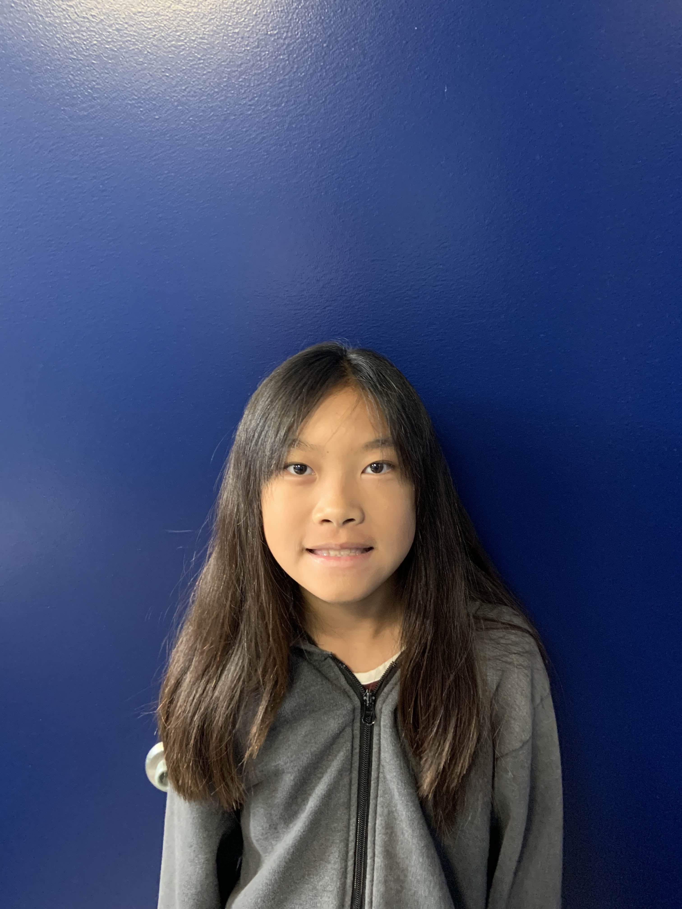

Biography
Hello! I'm Janice Hoong, a passionate developer and creative mind. I have a deep interest in Python programming, using Midjourney, and exploring history through Colonial Day projects.
Hobbies
In my free time, I enjoy playing the piano, violin, and participating in choir. Drawing and the color purple are my creative outlets.
Projects
Here are some of my projects:
- Python Development
- Midjourney Projects
- Colonial Day Activities